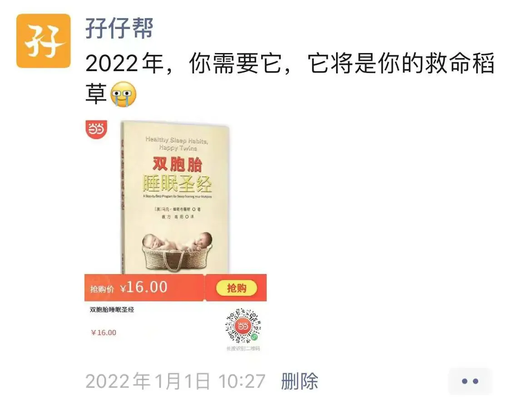
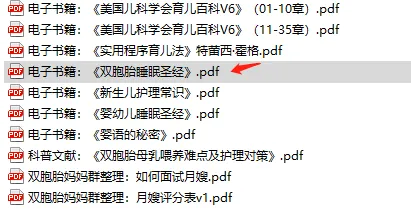
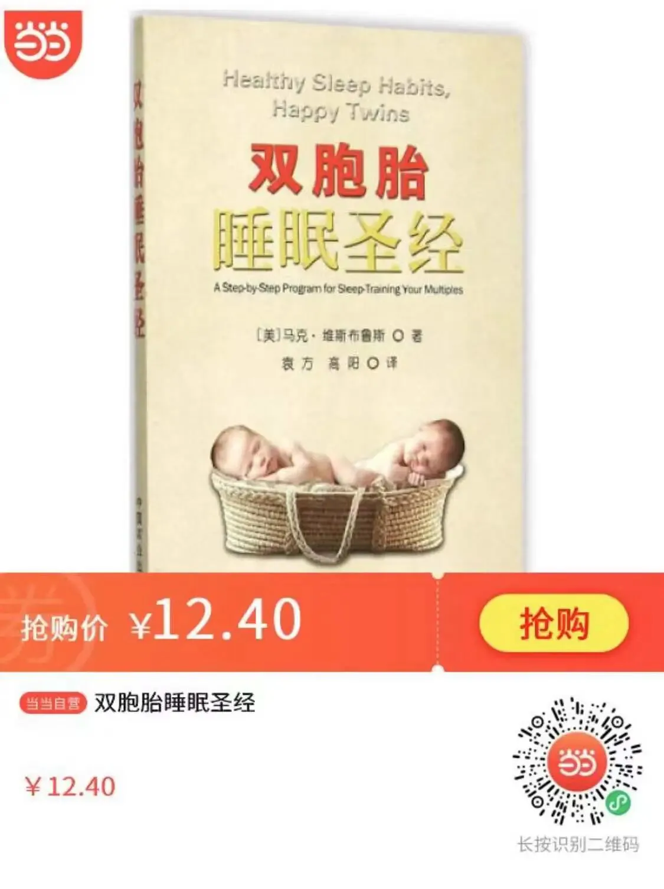

孖仔帮
公众号ID：twinsbang
关注
文|圆圈妈妈
网图|侵删
#先插播一则群通知#：第17期双胞胎跳蚤市场群已开放，公众号输入“赶集17”，扫码即可入群。
2022年的第一条朋友圈炸锅了，底下收到许多评论问，这本《双胞胎睡眠圣经》有用吗？凭什么说它是双胞胎家庭的救命稻草。
今天这篇来解释下。
我第一次知道这本书是在2019年，当时圆圈兄弟已经4岁＋了，早已过了睡眠困扰的阶段。然而，当我看完这本书后，依旧感触良多。
曾经被两个睡渣宝宝折磨得体无完肤，那段叫天天不应叫地地不灵的往事，历历在目。
内心有种相见恨晚的情愫在滋生，有人懂的感觉真好，尤其是读到这句话：
“强烈希望所有父母可以听从自己内心的声音，遵从自己内心的感受，做出最适合自己、最让自己感到舒服的决定，而不是尝试去让其他人感到满意。”
我在想，我之所以觉得养育双胞胎那么艰难，也许正是因为我从来没有遵从自己内心的感受，而是“打肿脸充胖子”让其他人满意，包括自己亲生的两个双胞胎儿子。
今天我想以一个过来人的角度，谈谈我对《双胞胎睡眠圣经》这本书的读后感。
《双胞胎睡眠圣经》的作者，马克·维斯布鲁斯博士，一个史诗般存在的人物，做了35年的儿科医生，是4个孩子的父亲，同时也是6个孙子的爷爷。
光是看目录，我就知道这本书是我的菜！
第一部分 筑梦童年,睡眠改变人生
第一章 全家一起睡个好觉
第二章 健康睡眠的秘密
第二部分 双胞胎睡眠秘笈
第三章 双胞胎睡眠训练法
第四章 睡眠训练中的团队合作
第五章 不同年龄段儿童对睡眠的不同需求
第三部分 排忧解难
第六章 轻松摘定母乳喂养
第七章 睡眠训练的各种困难
这本书有六大亮点：
亮点一：为双胞胎婴儿量身定做的睡眠训练计划，独一无二
全书最精彩的是第二部分——双胞胎睡眠秘笈。
在这个章节，马克介绍了双胞胎睡眠训练法和让双胞胎宝宝安然睡下的5个步骤。
养育双胞胎的头一年非常艰难，主要难在两宝宝的睡眠问题。宝宝们是否可以在需要睡觉的时候自己睡去，是育儿生活乃至整个双胞胎家庭生活中至关重要的一个环节。
搞定两个崽的睡眠就等于解决了两个心腹大患，整个家庭的运转才能得以正常进行。
亮点二：同床共枕还是分榻而眠，你的内心说了算
双胞胎宝宝同床睡还是分开睡，一直是双胞胎育儿群的问题重灾区。
虽然马克并没有在书中明确指出双胞胎应该同床睡还是分开睡，但他有段话非常值得我们双胞胎父母深思。
“这个选择应该是由你们夫妻双方根据自己的切实需求而做出的共同选择,它应该首先让你们两个人感到舒服。影响这个选择的重要因素主要来自两个方面,一是完全来自于父母的个人感受和心理接受程度,另一个则来自于文化习俗。”
亮点三：睡训时，双胞胎宝宝同时哭，抓住时机很关键
许多家庭可能完全无法将作息规律建立起来，也无法开展真正的睡眠训练，而造成这种情况的原因通常只有一个：两宝宝总会在训练时大声哭泣。
而我们的软肋恰恰就是：实在受不了宝宝们哭。
为此，马克传授了3个处理双胞胎哭闹的锦囊妙计，除了可以培养两宝宝的自我安抚能力，还能有效促进睡训计划顺利实施。
他还提到千方百计，穷尽手段都不如【抓准实际】，也就是睡眠信号，而对婴儿进行安抚并让婴儿自行入睡的最佳时机就是：欲睡未睡之时。
亮点四：睡训的成败与否不在于妈妈，而在于“团队合作”
养育双胞胎是一项极具挑战性的工作，足以榨干父母的每一份精力，这项工作最根本、最严重的问题就是人手不足。
所以，多数父母都会寻求他人的帮助，无论是来自亲友，还是雇佣的月嫂和保姆。
但，问题也会接踵而来，尤其体现在睡训上。
如果任何一个人在睡眠训练中将宝宝刚刚建立起来的睡眠规律打破，或者干脆不理解也不执行这个计划，那一切都无从谈起。
可见，睡训的成败不在于不是你的训练方法多么科学具体实用，而在于参与看护两宝宝的所有人是否目标一致，同心协力。
这在我们国内的双胞胎家庭尤其适用。
因此，我强烈建议，这本书除了双胞胎父母必看，还要普及给所有参与照顾两宝宝的人，包括但不限于两宝宝的爷爷奶奶，外公外婆，月嫂，保姆等。
也许，老人家可能看不大懂或者不一定会采纳，那至少你与老人家沟通时，这本书将会是一个强有力的理论依据。
如果你的婆婆宁愿相信外人说的话，也不相信你这个儿媳用心良苦的带娃建议，那么...把这本书送给她吧！
亮点五：不同年龄幼儿的睡眠需求，双胞胎父母必知
在朋友圈的评论中，有妈妈问，双胞胎2岁了，这本书的用处大吗？
如果孩子们的睡眠一直都很好，那几乎没有用处，如果一直睡渣，没有建立规律的睡眠习惯，那么可以在这本书中找到调整方法。
在第五章，马克针对不同年龄段双胞胎孩子的睡眠特点，很贴心地介绍了相应的训练方法。
比如，马克针对3—4年龄段的双胞胎孩子睡眠问题的支招是这样的：在孩子们午睡和晚间入睡前重复你们制订的睡觉守则，明确指出如果他们遵守规则将会得到何种奖励,如果违反规则会有怎样的后果。
受此方法的指引，我给经常晚睡的圆圈兄弟准备了两个存钱罐，谁最快睡着，谁就可以得到更多硬币，并承诺硬币积累起来可以买各自喜欢的玩具。
这一招真的很凑效，他们为了心爱的托马斯玩具，压抑住兴奋的心情，开心地领着硬币放入存钱罐，遵守约定，自觉关灯，躺下，睡觉。
亮点六：解决了母乳喂养问题，睡眠训练如虎添翼
与睡训紧密相连的是双胞胎宝宝的母乳喂养。
我们在母乳喂养时经常会遇到这些问题：母乳不够两宝宝吃，怎么办？一个醒，一个睡，怎么喂？同时亲喂两个宝宝，如何操作？
针对上述问题，马克邀请了哺乳专家兼12年护士经验的南希·尼尔森提供了许多切实可行的宝贵经验。
想要同时母乳喂养两个宝宝，却总是焦虑沮丧的妈妈可以参考借鉴。
篇幅有限，就不一一列举了，这本书的亮点当然不止这六个，有需要阅读这本书的电子档，可关注公众号，对话框输入“睡眠”，即可获取。
若更喜欢阅读纸质书籍，可在当当网购买到正版，链接都给你们准备好了，扫描下方二维码即可。
最后，谈谈我对这本书的看法。
这本书的中文书名是《双胞胎睡眠圣经》，但它不是一本真正意义上的圣经，并不能带给你心灵上的宁静。
实不相瞒，从双胞胎出生的那一刻开始，你就与“静一静”彻底绝缘了！
这本书不是哄睡神器，若你指望着看完这本书后，你的双胞胎睡渣宝宝马上秒变睡神，那是不可能的！
这本书更多的是一种引导，一个启示，帮助一头雾水的双胞胎父母，在面对双胞胎宝宝的特殊睡眠问题时，能有经验可循，有路子可走，有法子可行。
个人觉得，这本书特别适合头胎来了双胞胎的新手父母，可恰到好处地缓解初为人父，初为人母的焦虑。
如此甚好，那就请把这本书当成一种启发，而不是教条。
老祖宗说了“尽信书则不如无书”。
我们可以从书中得到些启示，摸到点头绪，找到点方向，并严格遵循这个指导原则，根据不同情况，做不同的方式，做具体的处理。
总之，一句话，活学活用吧！
就当做是马克想在我们中国双胞胎父母的身上实践那句老话“授人以鱼不如授人以渔”。
这，也是他写这本书的目的：让阅读这本书的双胞胎父母们可以拥有一个睡眠充足的幸福家庭。
anyway，希望这本书可以帮助你赶走黑眼圈和浮肿的眼袋，让初为人母的你重获充足的睡眠和健康有序的日常作息。
今日互动话题
#如何搞定双胞胎的睡觉问题#
评论区聊一聊呗！
微信公众号：孖仔帮
ID : twinsbang
专注双胞胎孕育，养育，教育经验分享
扫码关注我们
点一下你会更好看耶



